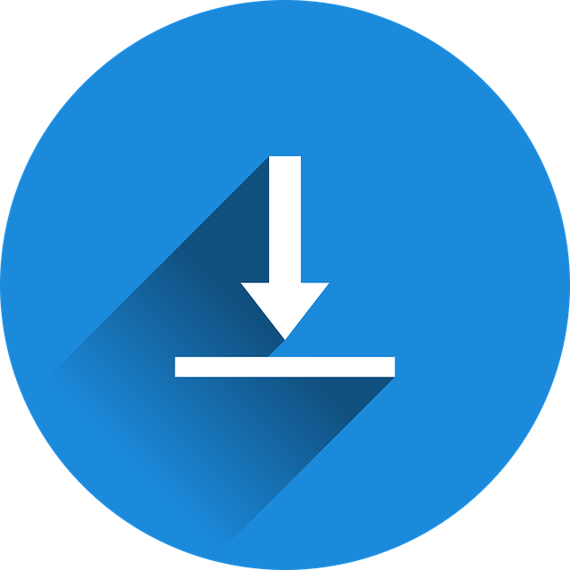
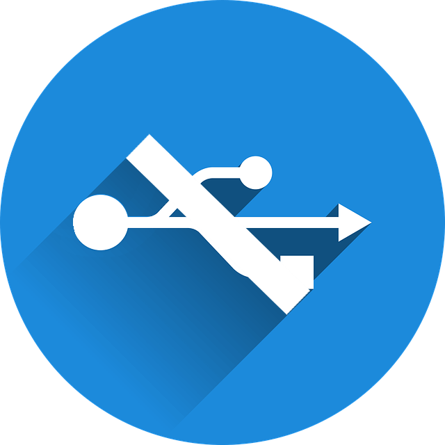
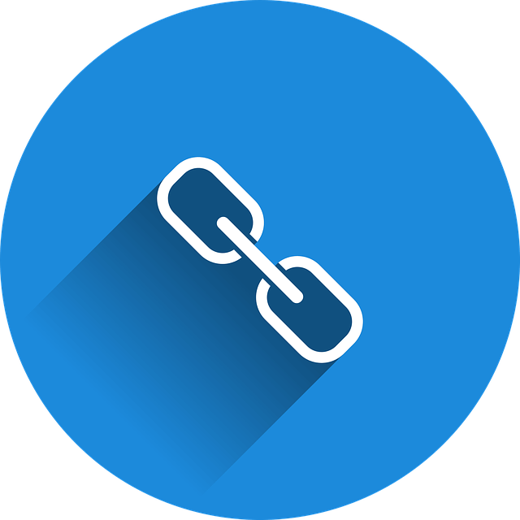
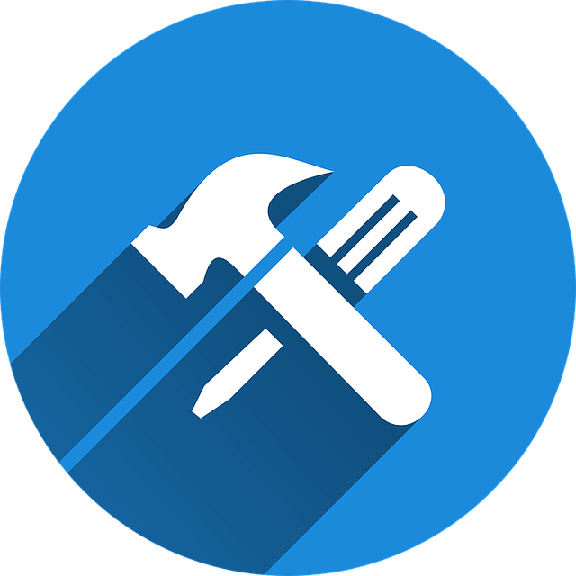

O WordPress.com é totalmente online e hospeda gratuitamente o seu website, tornando-se uma forte ferramenta para blogueiros que não queiram ter qualquer tipo de custo, porém o domínio do site conterá wordpress.com, a não ser que o usuário pague planos separados para um domínio. Seu cadastro acontece diretamente no site WordPress.com onde você preencherá os dados iniciais e já começará a produção do conteúdo.
Vantagens do WordPress.com
-

Não há necessidade de instalação -
É totalmente gratuito -
Não há necessidade de hospedagem externa -
Seu backup é automático -
Banco de dados ilimitados -
Não exige conhecimentos sobre programação
Desvantagens do WordPress.com
-

Sem plugins Externos -
Personalização limitada -

Não há domínio próprio -
Servidores sobrecarregados -
Não há como monetizar o blog
Video Promocional
Já o WordPress.org é um software que trabalha com PHP e MySQL. Ele deverá ser baixado e instalado direto em uma hospedagem, ficando totalmente preparado para receber as suas modificações. Essa versão trata-se de algo mais profissional, contando com hospedagem de terceiros, domínio próprio, grande autonomia por parte do cliente, além de uma enorme variedade de recursos.
Vantagens do WordPress.org
-
Total Personalização -
Código Aberto -

Variedade de Plugins -
Variedade de Templates -

Controle sobre 100% do site -
SEO Otimizado
Desvantagens do WordPress.org
-
Demanda alguns conhecimentos técnicos -
Precisa de Hospedagem -
Segurança por conta própria -
Backup através de plugins